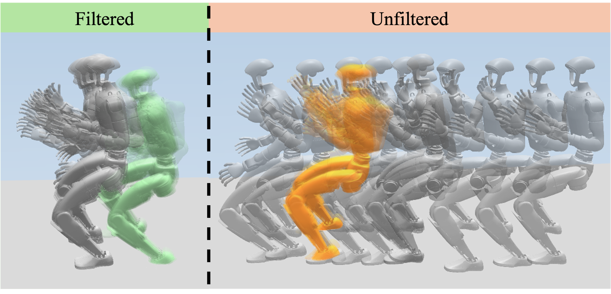
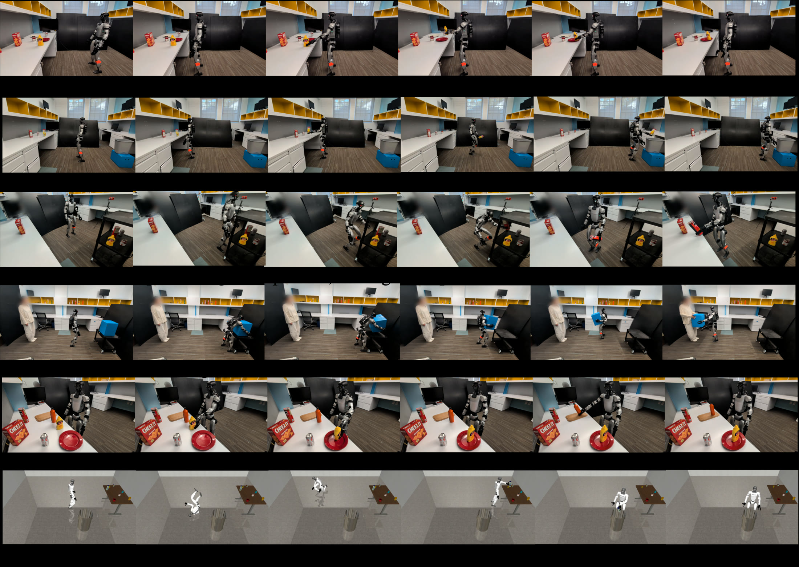
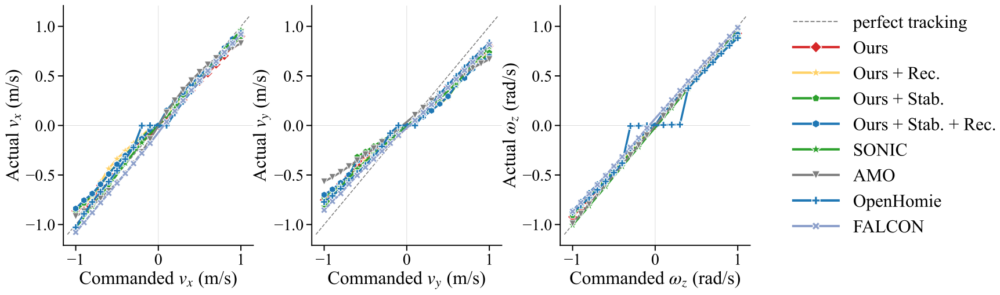
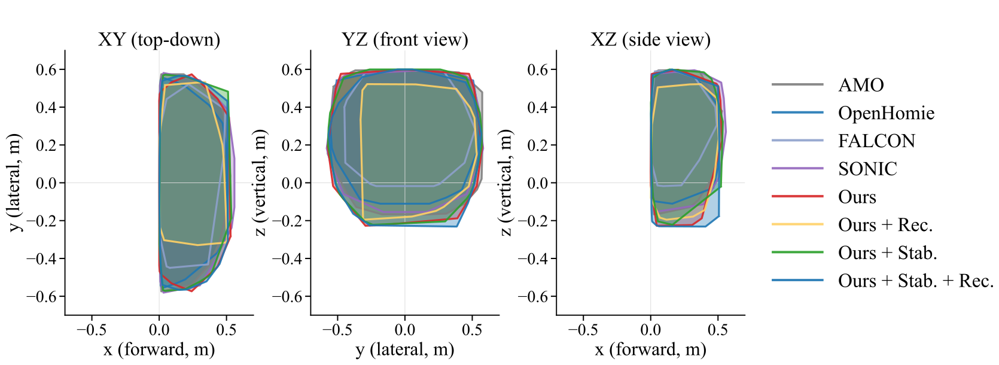

Abstract
For a humanoid robot to be deployed in the real world, the choice of command space — the interface between task planning and whole-body control — is crucial. Existing whole-body controllers typically demand dense kinematic or spatial references that planners struggle to synthesize from task semantics. We instead propose a compact, explicit interface that is intuitive, general, modular, and expressive enough for diverse manipulation skills.
To this end, we introduce HANDOFF, a single humanoid whole-body controller that follows this interface and is distilled via multi-teacher KL distillation under a context-conditioned gating scheme into a mixture-of-experts student from three complementary specialists: whole-body motion tracking with safety-filtered data, locomotion, and fall-recovery. On the Unitree G1, HANDOFF matches state-of-the-art velocity tracking and offers one of the largest robust manipulation workspaces. We further demonstrate hardware feasibility through multiple natural-language-driven task roll-outs, powered by a VLM-driven agentic planner with no task-specific data or controller fine-tuning.
A compact, planner-friendly command space
As humans, we do not reason about exact joint positions; we formulate sparse sub-goals (“find the coffee, walk near it, reach for it, grab it”) and let lower-level motor reflexes handle each step. Yet state-of-the-art whole-body controllers mostly operate under the motion-tracking regime, requiring the planner to emit a dense, full-body kinematic stream at the controller rate. HANDOFF instead targets a small, explicit 10-D command:
where $v_x, v_y, \omega_z$ are planar base velocity commands, $z$ is the commanded root height, and $p_L^P, p_R^P$ are bilateral pelvis-frame wrist targets. Each component matches a planner family: locomotion stacks emit $(v_x, v_y, \omega_z)$; grasp planners emit a pelvis-frame end-effector target; any squat-or-reach heuristic sets $z$. The same 10-D vector composes into whole-body actions — a low $z$ paired with forward wrist targets induces a coordinated squat-and-reach, while an asymmetric wrist target during nonzero base velocity induces a one-handed reach-while-walking.
Distilling three complementary teachers

System overview. We train three teachers separately: a 29-DoF whole-body motion-tracking teacher on CoP-filtered retargeted clips, a 15-DoF body-slice locomotion teacher on flat terrain with curriculum-blended arm perturbations, and a 29-DoF fall-recovery teacher on locomotion + paired fall-recovery clips. The mixture-of-experts student maps a 10-D command and 11-frame proprioception history to 29-DoF actions. Context-based action-sliced KL pulls the body slice toward a velocity-gated blend of the WBC and locomotion teachers, the arm slice toward the WBC teacher, and the fall-recovery teacher onto the full action when recovery is active; routing is shaped with load-balancing and recovery losses.
Such a controller must track task-space commands, produce coordinated whole-body manipulation behavior, and remain robust to disturbances such as recoverable falls — no single training regime delivers all three. We therefore pose this as a problem of utilizing expert specialists, each trained in its own regime on existing datasets, then composed into one deployable student via PPO together with multi-teacher KL distillation and mixture-of-experts training under a context-conditioned gating scheme.
- WBC teacher — a 29-DoF motion-tracking specialist, a strong prior on posture, reach, squat, and bilateral coordination.
- Locomotion teacher — a 15-DoF body-slice policy with task-based velocity-tracking rewards, robust to arm-induced CoM shifts.
- Fall-recovery teacher — an Adversarial Motion Prior policy trained on paired fall-and-recovery sequences.
At runtime, the legs follow the locomotion teacher under nonzero commanded velocity, the arms follow the motion-tracking teacher throughout, and the fall-recovery specialist assumes full supervision in niche situations — all distilled into one coordinated policy under the single 10-D interface, with no runtime controller switching. The hook is extensible: a new specialist plugs in as one new teacher head and one new context channel, with no changes to existing teachers or the command interface.

CoP filtering. The raw retargeted motion dataset contains dynamically infeasible frames, which we correct with a closed-form CBF projection on the static-CoP margin before training. The corrected reference (left) stays within the support polygon; the unfiltered version (right) drifts.
An agentic planner that speaks the interface

Agentic deployment pipeline. A natural-language instruction (0.001 Hz) is decomposed into atomic tasks by a high-level reasoner (regex + LLM fallback). A VLM (0.1 Hz) projects 2D detections onto the RGB-D point cloud to emit pelvis-frame waypoints; a waypoint tracker produces $(v_x, v_y, \omega_z)$, and near the target a skill selector emits root height $z$ and bilateral wrist targets $p_{R/L}^P$ (1–50 Hz) with a kinematics-based wrist correction. The resulting 10-D stream feeds the distilled controller (50 Hz), whose 29-DoF actions are tracked on hardware at 500 Hz.
Everything above the controller is swappable as long as the planner emits the required 10-D command, be it traditional task planning, agentic planning, or even vision-language-action models. The agentic planner is one representative implementation of this interface; the hardware rollouts show it can be instantiated in an untethered real-robot stack without task-specific controller retraining.
Task rollouts
The same 10-D controller, driven by the agentic planner from a natural-language instruction, executing a range of loco-manipulation tasks on the Unitree G1 hardware and in simulation. No controller-side change, data collection, or model fine-tuning is required between tasks.
Pick-and-place. “Put the mustard bottle in the red plate.”
Pick-transport-place. “Pick up the W bottle, turn around and put it in the grey bin.”
Squat-pick. “Pick up the Pringles chip bottle, turn right and put it to the left of the Cheez-It box.”
Bimanual pick-and-hand-off. “Pick up the blue box with both hands, turn around and hand it over.”
Bilateral pick-and-place. “Put the mustard bottle on the red plate, then put the orange bottle on the wood board.”
Task continuation after fall recovery (sim). “Pick up the shampoo bottle, turn right and put it in the metal bin” — with push recovery.
Teleoperation demonstration. Whole-body expressiveness driven directly through the 10-D interface — playing badminton.
Results

Agentic deployment snapshots. The same 10-D controller, driven by the agentic planner, executing a range of loco-manipulation tasks on the Unitree G1 hardware and in simulation: pick-and-place, pick-transport-place, squat-pick, bimanual-pick-and-hand-off, bilateral pick-and-place, and task continuation after fall recovery. No controller-side change, data collection, or model fine-tuning is required between tasks.
We evaluate the controller on two quantitative axes. For velocity tracking, we sweep per-axis velocity commands along $[-1, 1]$ and report the mean absolute error between commanded and realized base twist. For the manipulation workspace, we sample bilateral wrist targets in the pelvis frame and report the robust workspace volume (hull volume scaled by the feasible fraction) in the forward half-space, where every loco-manipulation task we care about happens.
Ablation progression
| Ablation | |Δvx|↓ | |Δvy|↓ | |Δωz|↓ | Robust WS↑ |
|---|---|---|---|---|
| Direct | 0.29 | 0.43 | 0.08 | 0.20 |
| + Dual teacher | 0.14 | 0.25 | 0.09 | 0.31 |
| + RandCmd | 0.14 | 0.13 | 0.05 | 0.29 |
| + Split KL + MoE (Ours) | 0.07 | 0.14 | 0.04 | 0.27 |
| + AMP recovery (Ours + Rec.) | 0.07 | 0.15 | 0.05 | 0.26 |
| + Stability (Ours + Stab.) | 0.07 | 0.18 | 0.04 | 0.31 |
| + Stab. + Rec. | 0.06 | 0.18 | 0.06 | 0.31 |
Comparison with SOTA controllers
| Method | |Δvx|↓ | |Δvy|↓ | |Δωz|↓ | Feas.%↑ | Robust WS↑ |
|---|---|---|---|---|---|
| FALCON | 0.07 | 0.10 | 0.07 | 35.5 | 0.06 |
| OpenHomie | 0.06 | 0.12 | 0.10 | 62.9 | 0.15 |
| AMO | 0.06 | 0.19 | 0.01 | 80.9 | 0.22 |
| SONIC | 0.03 | 0.15 | 0.02 | 89.8 | 0.26 |
| Ours | 0.07 | 0.14 | 0.04 | 87.1 | 0.27 |
| Ours + Rec. | 0.07 | 0.15 | 0.05 | 92.0 | 0.26 |
| Ours + Stab. | 0.07 | 0.18 | 0.04 | 97.7 | 0.31 |
| Ours + Stab. + Rec. | 0.06 | 0.18 | 0.06 | 90.8 | 0.31 |
Velocity errors are mean |cmd−realized| (m/s, rad/s) over the $[-1,1]$ sweep. Feas. is the fraction of bilateral wrist-target trials with wrist error under 15 cm, no fall, and pelvis drift under 25 cm; Robust WS (m3) is the wrist-workspace hull volume scaled by feasibility in the forward half-space.

Velocity-tracking sweep vs. SOTA controllers.

Robust bilateral wrist-target workspace hulls (forward half-space).
Even under a favorable differential-IK adapter that equips each baseline with pelvis-frame wrist targets, our velocity tracking sits within the SOTA cluster on every axis while delivering the largest robust workspace (0.31 m3); Ours + Stab. takes the best feasibility (97.7%). HANDOFF stays competitive because it learns wrist-target, locomotion, and balance coupling natively rather than through an external translation layer.
BibTeX
@article{yang2026handoff,
title = {HANDOFF: Humanoid Agentic Task-Space Whole-Body Control via Distilled Complementary Teachers},
author = {Yang, Lizhi and Li, Junheng and Poddar, Nehar and Hou, Yiling and Huh, Gio and Griffin, Robert and Gkioxari, Georgia and Ames, Aaron D.},
journal = {arXiv preprint arXiv:2606.06493},
year = {2026},
url = {https://arxiv.org/abs/2606.06493}
}